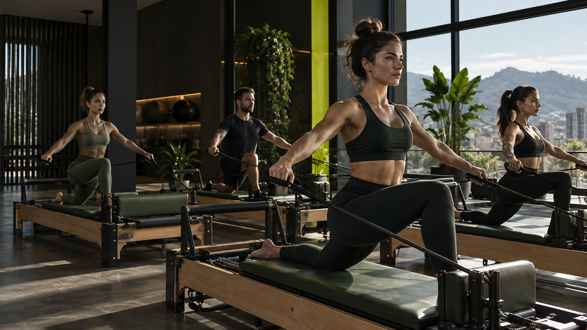

Reconhecer
Entender padrões, limites e possibilidades do seu movimento.

Movimento com progressão
Entender padrões, limites e possibilidades do seu movimento.
Organizar postura, respiração e estabilidade com precisão.
Ganhar confiança para avançar com segurança.
Sentir os benefícios na rotina, no trabalho e no lazer.
As aulas de Pilates combinam técnica e progressão. O contato direto ajuda a encontrar uma turma compatível com seu momento e sua rotina.
O que o Pilates pode desenvolver
A Lótus apresenta uma proposta de movimento individualizado, com atenção à consciência corporal, prevenção e qualidade de vida. Na unidade Vila Nova, o atendimento confirmado é Pilates.
Ver fonte oficial ↗Informação objetiva
O site oficial da Lótus confirma Pilates na unidade Vila Nova. Fisioterapia é anunciada na unidade Anita Garibaldi.
Fale pelo WhatsApp (47) 99289-7343 para confirmar turmas, horários e disponibilidade.
Unidade Vila Nova
Confirme horários, turmas e valores antes da visita.
Falar pelo WhatsApp ↗Abrir rota ↗